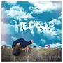

Нервы
Состав группы
- Евгений Мильковский — вокал, гитара
- Роман Булахов — соло-гитара, бэк-вокал
- Алексей Бочкарёв — ударные
- Дмитрий Клочков — бас-гитара, бэк-вокал
Самые популярные песни
Батареи
Нервы
Отрицательный герой
Свадьба
Самый дорогой человек
Муза
Глупая
Спи спокойно
Альбомы
-
2012 — «Всё, что вокруг»
-
2013 — «Я живой»

-
2015 — «Третье дыхание»
-
2016 — «Костёр»
-
2019 — «Слэм и депрессия»
-
2021 — «7»
MILKOVSKIY
Состав
Евгений Мильковский — вокал, гитара, соло-гитара, бэк-вокал, ударные, бас-гитара
Самые популярные песни
Мир в огне
Во мне всё стихло
В другой раз
Видела ли ты свои волосы
Тёплые фильмы
Колыбельная
Альбомы
-
2010 — «В моей комнате»
-
2020 — «Человек с дождём в голове»

-
2021 — «Вернуться домой»

-
2024 — «Не вернуться домой»

Nirvana
Состав группы
- Курт Кобейн — вокал, гитара
- Дэйв Грол — ударные, бэк-вокал
- Крист Новоселич — бас-гитара
Самые популярные песни
Smells Like Teen Spirit
Come As You Are
Heart-Shaped Box
Lithium
About A Girl
In Bloom
All Apologies
Dumb
Альбомы
-
1989 — «Bleach»
-
1991 — «Nevermind»
-
1993 — «In Utero»